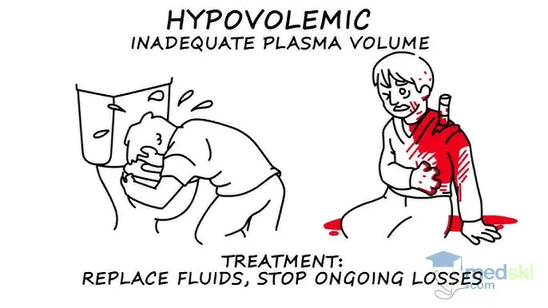
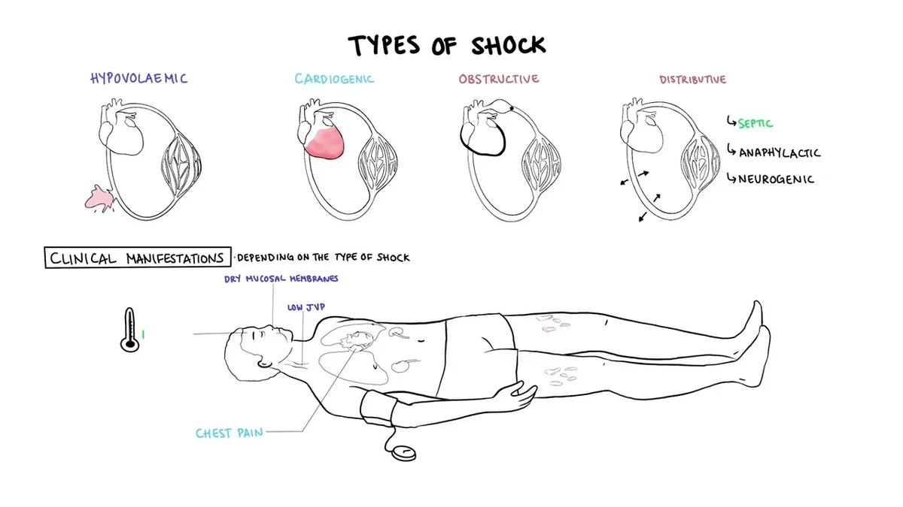
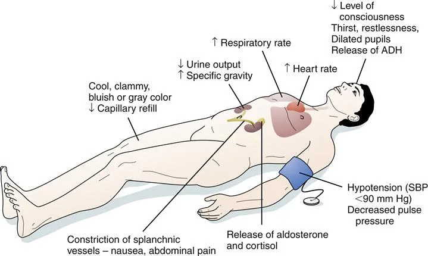

Expanded Nursing Uganda Explanation
Surgical shock should be understood beyond a short definition. Link the concept to patient history, focused assessment, common risks, nursing priorities, documentation and evaluation of outcomes.
Contents — 19 sections (tap to expand)
01 Nursing Uganda Snapshot
Shock is a life-threatening state of inadequate tissue perfusion. The nurse must recognize it early because delay leads to organ failure and death.
02 Build The Idea
Shock may come from bleeding, fluid loss, sepsis, heart failure, anaphylaxis or spinal injury. The visible cause may differ, but the nursing priority is perfusion.
- Hypovolaemic: fluid or blood loss.
- Septic: infection with circulatory failure.
- Cardiogenic: pump failure.
- Anaphylactic: severe allergic reaction.
- Neurogenic: loss of vascular tone.
03 Ward Mode
Treat suspected shock as urgent even before blood pressure drops. Early signs can be subtle.
- Call for senior help.
- Assess airway, breathing and circulation.
- Control bleeding and establish IV access as ordered.
- Monitor pulse, BP, respiration, mental state, skin and urine output.
04 Red Flags
- Systolic BP falling.
- Pulse very fast or weak.
- Altered consciousness.
- Severe bleeding.
- Cold clammy skin.
- Oliguria.
- Sepsis signs.
05 Patient Teaching
- After recovery, explain cause and warning signs.
- Teach wound, medicine, hydration or infection follow-up depending on cause.
- Encourage urgent return for collapse, bleeding, fever or breathlessness.
06 Exam Answer Map
- Define shock.
- Classify types.
- List early and late signs.
- Explain emergency management.
- Add nursing observations and complications.
07 SHOCK
- Shock is a state of poor perfusion with impaired cellular metabolism manifesting with severe pathophysiological abnormalities. It is due to circulatory collapse and tissue hypoxia. Shock is meant by ‘inadequate perfusion` to maintain normal organ function.
Shock is a life-threatening medical condition characterized by inadequate tissue perfusion and oxygenation , leading to cellular dysfunction, widespread organ damage, and if uncorrected, irreversible organ failure and death. It's not simply low blood pressure, but rather a critical imbalance between the demand for oxygen and nutrients by the cells and the body's ability to deliver them.
- The condition associated with circulatory collapse when the arterial blood pressure is too low to maintain an adequate supply of blood to the tissues.
- The failure of the circulatory system to adequately supply oxygen to the tissues.
08 ETIOLOGY AND PATHOPHYSIOLOGY
Shock has a multitude of causes. The most common cause of shock is severe blood loss i.e. if it exceeds 1.2 liters.
- Coronary arterial occlusion with acute myocardial ischaemia.
- Trauma with structure damage to the heart
- Toxaemia – bacterial or viral
- Effects of drugs
- Postoperative atelectasis and pneumonia
- Thoracic injuries, particularly tension pneumothorax, bruising and laceration of the lungs
- Obstruction of the pulmonary artery by an embolus.
- Disturbances of lung function following surgery and anesthesia.
- Whole blood – haemorrhage
- Plasma – significant in burns
- Water and electrolyte which occurs in: Peritonitis, Intestinal obstruction and paralytic ileus, Severe diarrhoea and vomiting.
- Adrenal deficiency
- The common faint. The arterioles in the muscle relax
- Over dosage of drugs eg analgesic like pethedine
- Following therapy with beta blocking agents for angina, hypertension etc
- Noxious stimuli, such as pain, if severe with cause vasodilation
- Systolic dysfunction: it is the inability of the heart to pump forward like in myocardial infarction and cardial myopathy
- Diastolic dysfunction: it is the inability of the heart to fill e.g. cardiac tamponade, ventricular hypertrophy and cardial myopathy
- Dysrhythmias eg in bradyrhythmias and tarchyrhythmias
- Structural factors like valvular stenosis or regurgitation, ventricular septal rapture
- Internal bleeding like fracture of long bones, ruptured spleen heamopneumothorax and severe pancreatitis
- Fluid shift like in burns and cysts
- Spinal anesthesia
- Vasomotor center depression
09 Types of Shock: Categorization by Underlying Pathophysiology
Shock is broadly classified into several types based on the primary physiological mechanism causing the inadequate tissue perfusion. While these types have distinct primary causes, they often share common clinical features and can coexist or lead to one another.
- Definition: Results from a significant reduction in circulating intravascular fluid volume, leading to decreased venous return to the heart, reduced cardiac preload, and consequently, decreased cardiac output.
- Pathophysiology: The heart has insufficient blood to pump effectively, leading to a drop in blood pressure and inadequate tissue perfusion. The body attempts to compensate by increasing heart rate (tachycardia) and constricting peripheral blood vessels (vasoconstriction) to shunt blood to vital organs.
- Hemorrhage (Absolute Hypovolemia): Trauma (external or internal bleeding)
- Gastrointestinal bleeding (e.g., peptic ulcer, variceal bleeding)
- Post-surgical bleeding
- Obstetric hemorrhage (e.g., postpartum hemorrhage)
- Aortic rupture
- Fluid Loss (Relative Hypovolemia/Third Spacing): Severe Dehydration: Vomiting, diarrhea, inadequate fluid intake.
- Severe Burns: Massive fluid shifts from intravascular space into interstitial space.
- Peritonitis/Bowel Obstruction: Fluid sequestration within the abdominal cavity or bowel lumen.
- Diabetic Ketoacidosis (DKA) / Hyperosmolar Hyperglycemic State (HHS): Profound osmotic diuresis.
- Excessive Diuretic Use.
- Definition: Occurs when the heart's pumping ability is severely impaired, leading to a significant reduction in cardiac output despite adequate intravascular volume. The heart simply cannot pump enough blood to meet the body's demands.
- Pathophysiology: Decreased myocardial contractility and/or structural issues prevent effective forward flow of blood, leading to decreased cardiac output, increased pulmonary and systemic venous pressures, and subsequent tissue hypoperfusion.
- Causes: Myocardial Infarction (MI): Especially extensive anterior or left ventricular MI, which damages a significant portion of the heart muscle.
- Severe Arrhythmias: Tachyarrhythmias (e.g., ventricular tachycardia, atrial fibrillation with rapid ventricular response) or bradyarrhythmias that significantly reduce ventricular filling time or heart rate.
- Valvular Heart Disease: Acute severe mitral regurgitation, aortic stenosis.
- Cardiomyopathies: Acute exacerbation of chronic heart failure.
- Myocarditis: Inflammation of the heart muscle.
- Acute Papillary Muscle Rupture.
- Definition: Characterized by severe peripheral vasodilation, leading to a maldistribution of blood volume within the vascular system. Despite normal or increased total blood volume, there is a relative hypovolemia as the vascular "container" expands, causing insufficient blood return to the heart and decreased tissue perfusion.
- Pathophysiology: Loss of sympathetic vasomotor tone, or release of excessive vasodilatory substances, causes widespread arterial and/or venous dilation. This leads to a profound drop in systemic vascular resistance (SVR) and a pooling of blood in the peripheral circulation, effectively decreasing central venous pressure and cardiac preload.
- Subtypes and Causes: a. Septic Shock: Definition: A life-threatening organ dysfunction caused by a dysregulated host response to infection, leading to persistent hypotension requiring vasopressors to maintain mean arterial pressure (MAP) ≥ 65 mmHg and having a serum lactate level > 2 mmol/L despite adequate fluid resuscitation.
- Pathophysiology: Triggered by severe infection (bacterial, viral, fungal). Pathogen-associated molecular patterns (PAMPs) and danger-associated molecular patterns (DAMPs) released from pathogens and damaged host cells activate a complex inflammatory cascade. This leads to widespread endothelial dysfunction, microcirculatory alterations, profound vasodilation, increased capillary permeability (fluid leakage into interstitial spaces leading to relative hypovolemia and edema), and myocardial depression.
- Causes: Severe infections, particularly with Gram-negative bacteria (e.g., *E. coli, Klebsiella, Pseudomonas*) or Gram-positive bacteria (e.g., *Staphylococcus aureus, Streptococcus pneumoniae*). Common sources include pneumonia, urinary tract infections, abdominal infections (e.g., appendicitis, diverticulitis), and skin/soft tissue infections.
- Clinical Features: Often presents as "warm shock" in early stages (warm, flushed skin, bounding pulses) due to vasodilation, progressing to "cold shock" as compensatory mechanisms fail and cardiac output falls.
- Definition: A severe, life-threatening systemic allergic reaction characterized by rapid onset of profound vasodilation, increased vascular permeability, and bronchoconstriction.
- Pathophysiology: Exposure to an allergen triggers a massive release of inflammatory mediators (e.g., histamine, leukotrienes, prostaglandins) from mast cells and basophils. These mediators cause widespread vasodilation and leakage of fluid from capillaries into the interstitial space, leading to circulatory collapse and airway obstruction.
- Causes: Exposure to allergens such as insect stings, certain foods (e.g., peanuts, shellfish), medications (e.g., antibiotics, NSAIDs), or latex.
- Definition: Occurs due to loss of sympathetic nervous system tone, leading to widespread vasodilation and pooling of blood in the periphery. Unlike other forms of shock, the heart rate may be paradoxically normal or even bradycardic.
- Pathophysiology: Damage to the sympathetic nervous system (typically above T6) interrupts the normal vasoconstrictive impulses to peripheral blood vessels. This results in unopposed parasympathetic activity, leading to profound vasodilation and often bradycardia.
- Causes: Spinal cord injury (most common cause).
- Spinal anesthesia.
- Guillain-Barré Syndrome.
- Severe head trauma (less common as a primary cause).
- Certain drugs (e.g., ganglionic blockers, adrenergic antagonists).
- Definition: Shock resulting from acute hormonal deficiencies that disrupt normal cardiovascular function and metabolic processes.
- Causes: Adrenal crisis (acute adrenal insufficiency leading to severe hypotension refractory to fluids and vasopressors due to lack of cortisol) or myxedema coma (severe hypothyroidism leading to decreased cardiac output, bradycardia, and hypothermia).
- Definition: Occurs when there is a physical obstruction to blood flow, either into or out of the heart, leading to reduced cardiac output. The "pump" (heart) is functioning, but its ability to fill or eject blood is physically blocked.
- Pathophysiology: Blockage of major blood vessels or mechanical compression of the heart or great vessels impedes venous return, ventricular filling, or cardiac ejection, resulting in decreased cardiac output and tissue hypoperfusion.
- Causes: Pulmonary Embolism (PE): Massive PE obstructs blood flow from the right ventricle into the pulmonary circulation.
- Cardiac Tamponade: Accumulation of fluid or blood in the pericardial sac, compressing the heart and preventing adequate ventricular filling.
- Tension Pneumothorax: Air accumulation in the pleural space collapses the lung and shifts the mediastinum, compressing the great vessels and heart.
- Constrictive Pericarditis (severe acute exacerbation).
- Critical Valvular Stenosis (less common as primary obstructive shock).
- Definition: While often presenting as syncope (fainting), severe forms can lead to a transient state of shock. It's characterized by a sudden, exaggerated reflex response that results in both widespread peripheral vasodilation and bradycardia.
- Pathophysiology: Triggered by certain stimuli (e.g., pain, fear, emotional stress, prolonged standing, specific odors). The vagus nerve is overstimulated, leading to parasympathetic activation (bradycardia) and sympathetic inhibition (vasodilation), causing a temporary drop in blood pressure and cerebral perfusion.
- Clinical Significance: Usually self-limiting and resolves upon lying down. Rarely life-threatening unless associated with significant trauma from a fall. Not considered a true "shock state" in the critical care sense as it's typically transient and reversible with simple measures.
10 Recognition Features of Shock / Signs and Symptoms of Shock
The signs and symptoms of shock are a reflection of the body's compensatory mechanisms attempting to maintain vital organ perfusion, followed by the failure of these mechanisms as shock progresses. The specific presentation can vary slightly depending on the type and stage of shock.
In this initial stage, the body activates its sympathetic nervous system and hormonal responses to maintain blood pressure and vital organ blood flow. This often leads to increased heart rate and vasoconstriction.
- Rapid Pulse (Tachycardia): The earliest and most consistent sign. The heart beats faster to compensate for reduced cardiac output.
- Normal to Slightly Decreased Blood Pressure: The body is still able to maintain BP through vasoconstriction.
- Pale, Cool, Clammy Skin: Due to peripheral vasoconstriction shunting blood away from the skin to vital organs. The clamminess is due to diaphoresis (sweating) caused by sympathetic stimulation.
- Delayed Capillary Refill: >2 seconds (indicates poor peripheral perfusion).
- Restlessness, Anxiety, Agitation: Early signs of cerebral hypoperfusion and catecholamine release.
- Increased Thirst: Due to fluid shifts and activation of the renin-angiotensin-aldosterone system.
- Oliguria: Decreased urine output (< 0.5 mL/kg/hr) as kidneys conserve fluid and blood flow is shunted away.
- Slightly Increased Respiratory Rate: Due to metabolic acidosis (from anaerobic metabolism) and increased oxygen demand.
As shock progresses, the compensatory mechanisms become overwhelmed, leading to widespread cellular hypoxia, anaerobic metabolism, and accumulation of lactic acid. Organ function begins to deteriorate.
- Hypotension: Significant drop in systolic blood pressure (<90 mmHg or MAP <65 mmHg) or a drop of >40 mmHg from baseline. This is a critical sign that compensation has failed.
- Weak, Thready Pulse: Rapid but difficult to palpate, indicating profound vasoconstriction and low stroke volume.
- Progressively Colder, Mottled Skin: Especially in extremities (e.g., "grey-blue skin," cyanosis of lips and nail beds) due to severe peripheral vasoconstriction and pooling of deoxygenated blood.
- Lethargy, Drowsiness, Confusion: Worsening cerebral hypoperfusion.
- Decreased Responsiveness to Stimuli.
- Nausea, Vomiting: Due to reduced blood flow to the GI tract.
- Abdominal Pain.
- Rapid, Shallow Breathing (Tachypnea): The body's attempt to compensate for metabolic acidosis.
- Increasing Lactic Acidosis: Due to anaerobic metabolism.
In this final stage, cellular and organ damage becomes so severe that it is irreversible, even with aggressive interventions. Multi-organ dysfunction syndrome (MODS) develops, leading inevitably to death.
- Profound Hypotension: Unresponsive to fluids and vasopressors.
- Severe Tachycardia or Bradycardia: With eventual cardiac arrest.
- Absent Peripheral Pulses.
- Unconsciousness, Coma.
- Fixed, Dilated Pupils.
- Loss of Reflexes.
- Gasping for Air (Agonal Respirations): Severe respiratory distress.
- Respiratory Failure.
- Anuria: Complete cessation of urine production.
- Acute Kidney Injury.
- Severe Lactic Acidosis: Uncorrectable.
- Electrolyte Imbalances.
- Disseminated Intravascular Coagulation (DIC): Widespread clotting and bleeding.
- Multi-Organ System Failure (MOSF).
While most forms of shock present with cool, clammy skin due to vasoconstriction, early septic shock (hyperdynamic or "warm shock" phase) can present differently due to the profound systemic vasodilation:
- Warm, Dry, Flushed Skin: Due to peripheral vasodilation.
- Rapid, Strong (Bounding) Pulse: Indicating a hyperdynamic state and decreased systemic vascular resistance.
- Fever: Evidence of underlying infection.
- Hyperventilation: To compensate for metabolic acidosis.
- Despite these initial "warm" signs, tissue perfusion is still inadequate at the microcirculatory level, and this phase rapidly progresses to decompensated ("cold") shock if not aggressively treated.
11 MANAGEMENT OF SHOCK
- To treat the cause
- To improve cardiac function
- To improve tissue perfusion
- Help patient to lie down and place patient in supine position
- Cover patient and keep him or her warm
- Raise and support her legs as high as possible
- Administer oxygen if possible
- Determine underlying cause and treat if possible e.g. applying pressure for bleeding.
- Lessen any tight clothing, undo anything that constrict the neck, chest and wrist
- Monitor breathing, pulse and response
- Monitor and record vital observation like pulse breathing, monitor level of response, if the casualty become unconscious, open the airway and check breathing.
- Treat the cause e.g. arrest haemorrhage, drain pus etc.
- Fluid replacement e.g. plasma normal saline dextrose ringers lactate, plasma expanders maximum 1 liter can be given in 24hours.
- Blood transfusion is done whenever necessary, hypotonic solutions like dextrose are poor volume expanders and so should not be used in shock.
- Inotropic agents e.g. dopamine, dobutamine, adrenaline infusions.
- Correction of acid base balance. Acidosis is corrected by using 8.4 sodium bicarbonate intravenously.
- Steroid is often life saving. 500- 1000mg of hydrocortisone can be given. It improves perfusion, reduces the capillary leakage and systemic inflammatory effects.
- Antibiotics in patients with patients with sepsis; proper control of blood sugar and ketosis in diabetic patients.
- Catheterization to measure urine output (30 – 50mls/hour or > 0.5 ml/kg/ hour should be maintained).
- Nasal oxygen to improve oxygenation or ventilator support with intensive care unit monitoring has to be done.
- Haemodialysis (a process of removing a waste part e.g. kidney) may be necessary if kidneys are not functioning.
- Control pain using morphine (4mg iv).
- Injection ranitidine iv or omeprazole iv or pantoprazole iv.
- Activated c protein , it is beneficial as it prevents the release of inflammatory response.
- Diuretics, mannitol is an osmotic that neither absorbed in the renal tubules nor metabolized. It may be given when acidosis and Oliguria have been corrected but if oliguria persist frusemide may also be given.
- Anticoagulants may occasionally be indicated if micro- circulatory thrombosis is suspected.
12 Prevention of shock
- Take thorough history which include biographic data, medical history, obstetric history, gynaecological.
- Assess the level of consciousness.
- Take the baseline vital observation which include temperature, pulse, respiration and blood.
- General body assessment from head to toe to rule out abnormalities like oedema, hemorrhage, cyanosis and pallor.
- If there is external heamorrhage arrest the bleeding by positioning the patient.
- Empty the bladder by passing a catheter.
- Antibiotic prophylaxis is given to prevent sepsis.
- Take investigation such as hemoglobin estimation, cross matching, blood grouping and cross matching, clotting factor, malaria slide etc.
- Give anxiolytics to allay anxiety and give pain killer to reduce pain.
- Resuscitate patient with iv fluids.
- Reassure the patient.
- The patient should be educated about physical exercises which are done post operatively.
- Circulatory collapse should be avoided by strenuous measures if all possible.
- Preoperatively patient should be fit as possible from the point of view of the circulatory system: His blood should be a adequate in quality and volume, His tissues should be hydrated adequately, He should be mobile so that there is no stagnation in the circulatory system.
- Patient is kept warm on his journey from the ward to the theater and back.
- Fear is allied and tranquiller are commonly used pre- operatively.
- The blood pressure is monitored continuously and recorded more so for the serious cases.
- Blood and fluid replacement is commenced in good time and the patient is monitored using fluid balance chart.
- Major operations are commenced only after satisfactory infusions have been established.
- The head of the bed is lowered if the blood pressure falls (Trendelenburg position).
- The anesthetist induces and maintains an adequate level of anesthesia ensuring good oxygenation and tissue perfusion.
- Fluid and electrolyte replacement (saline, 5% dextrose, Hartman solution, plasma and blood as indicated).
- Position the patient in a recovery position.
- Maintain air way patent.
- Give antibiotics to prevent infections.
- Give inflammatory drugs.
- Check the conscious level of the patient.
- Initiate exercise like coughing, deep breathing and ambulation to aid normal circulation.
- Rest and relieve of pain are continued to prevent shock.
13 General Nursing Considerations and Principles for Patients in Shock
Nursing care for a patient in shock is complex, dynamic, and requires rapid assessment, intervention, and continuous monitoring. The primary goals are to optimize tissue perfusion, restore hemodynamic stability, identify and treat the underlying cause, and prevent complications. Nurses work collaboratively with the medical team to implement a comprehensive plan of care.
14 Nursing Diagnoses)
Nursing diagnoses guide the individualized care plan for patients. Examples for a patient in shock might include:
- Decreased Cardiac Output related to altered preload, afterload, contractility, or heart rate, as evidenced by hypotension, tachycardia, altered mental status, decreased urine output, and cool, clammy skin.
- Ineffective Tissue Perfusion (Cardiac, Cerebral, Renal, Gastrointestinal, Peripheral) related to hypovolemia, impaired cardiac pump function, maldistribution of blood flow, or obstruction, as evidenced by pallor, cyanosis, delayed capillary refill, weak peripheral pulses, altered mental status, oliguria, and increased serum lactate.
- Impaired Gas Exchange related to ventilation/perfusion mismatch, increased metabolic demand, or pulmonary edema, as evidenced by tachypnea, dyspnea, abnormal blood gas values, and cyanosis.
- Deficient Fluid Volume related to active fluid loss, failure of regulatory mechanisms, or third-space fluid shift, as evidenced by hypotension, tachycardia, decreased urine output, and dry mucous membranes.
- Risk for Infection related to invasive procedures, compromised immune status, or presence of underlying infection.
- Acute Confusion related to decreased cerebral perfusion, metabolic imbalances, or hypoxia, as evidenced by disorientation, agitation, or altered level of consciousness.
- Risk for Imbalanced Body Temperature related to altered metabolic rate, infection, or environmental factors.
- Anxiety/Fear related to critical illness, threat of death, or unpredictable prognosis.
15 Nursing Interventions (General Principles - specific actions depend on the type of shock)
Interventions are aimed at supporting vital organ function, addressing the underlying cause, and minimizing further deterioration. These often fall into categories of hemodynamic support, respiratory support, infection control, and monitoring.
- Fluid Resuscitation: Administer intravenous fluids (crystalloids or colloids) as prescribed and monitor response (e.g., blood pressure, heart rate, urine output, central venous pressure).
- Vasopressors/Inotropes: Administer vasoactive medications (e.g., norepinephrine, dopamine, dobutamine) as prescribed to improve blood pressure and cardiac output, titrating carefully to desired effect and continuously monitoring for adverse effects (e.g., arrhythmias, tissue ischemia).
- Blood Product Administration: Administer blood transfusions (e.g., packed red blood cells, plasma, platelets) for hemorrhagic shock as indicated.
- Positioning: Position the patient to optimize cardiac output and venous return (e.g., modified Trendelenburg for hypovolemic shock if tolerated and not contraindicated).
- Maintain Body Temperature: Prevent hypothermia, which can worsen acidosis and coagulopathy. Use warming blankets if necessary.
- Oxygen Therapy: Administer high-flow oxygen via appropriate device (e.g., non-rebreather mask).
- Airway Management: Assess and maintain a patent airway. Prepare for and assist with intubation and mechanical ventilation if respiratory failure is imminent or present.
- Ventilator Management: Monitor ventilator settings, ensure proper oxygenation and ventilation, and prevent ventilator-associated complications.
- Arterial Blood Gas (ABG) Monitoring: Frequently assess ABG results to monitor oxygenation, ventilation, and acid-base balance.
- Vital Signs: Monitor heart rate, blood pressure (preferably arterial line), respiratory rate, and oxygen saturation continuously and frequently.
- Cardiac Monitoring: Continuous ECG monitoring for arrhythmias and signs of ischemia.
- Neurological Status: Assess level of consciousness, pupillary response, and motor function frequently to detect changes in cerebral perfusion.
- Urine Output: Insert an indwelling urinary catheter and monitor hourly urine output as a sensitive indicator of renal perfusion and overall hemodynamic status.
- Skin Assessment: Monitor skin color, temperature, turgor, and capillary refill for changes in perfusion.
- Laboratory Values: Monitor serial laboratory tests (e.g., CBC, electrolytes, lactate, renal and liver function tests, coagulation studies) to track response to treatment and detect complications.
- Fluid Balance: Accurately track all intake and output.
- Pain Assessment: Administer analgesia as needed, considering its effects on hemodynamics.
- For Septic Shock: Administer broad-spectrum antibiotics promptly after obtaining cultures.
- Identify and control the source of infection (e.g., drainage of abscess, removal of infected line).
- For Cardiogenic Shock: Administer medications to improve cardiac contractility or reduce afterload as prescribed.
- Prepare for and assist with interventions like angioplasty, thrombolysis, or intra-aortic balloon pump (IABP) insertion.
- For Hypovolemic Shock: Identify and stop the source of bleeding or fluid loss.
- Administer fluids/blood products.
- For Obstructive Shock: Prepare for and assist with interventions to relieve obstruction (e.g., pericardiocentesis for tamponade, needle decompression/chest tube for tension pneumothorax).
- Infection Control: Maintain strict aseptic technique for all invasive procedures (e.g., IV line insertion, Foley catheter care, wound care).
- Skin Integrity: Implement pressure injury prevention strategies (e.g., frequent repositioning, pressure-relieving devices) due to poor perfusion and immobility.
- Nutrition: Initiate enteral or parenteral nutrition as soon as feasible to support metabolic needs and gut integrity.
- Psychological Support: Provide emotional support to the patient and family, explain procedures, and answer questions honestly.
- Deep Vein Thrombosis (DVT) Prophylaxis: Administer prophylactic anticoagulants or use pneumatic compression devices as ordered.
- Document all assessments, interventions, and patient responses accurately and in a timely manner.
- Communicate effectively with the interdisciplinary team (physicians, respiratory therapists, pharmacists, etc.) regarding patient status, changes, and concerns.
16 Nursing Uganda Clinical Lens
Use Surgical Shock as a practical nursing topic, not only a memorized definition. Prioritize airway, breathing, circulation, pain, asepsis, wound healing and early complication detection.
- What to understand first: define surgical shock, identify the normal or expected pattern, then explain what changes when the patient is unwell.
- Why it matters in care: the nurse must recognize risk early, explain findings clearly, document accurately and know when to escalate.
- How to revise it: connect each point to assessment, nursing diagnosis or care problem, intervention, rationale and evaluation.
17 Assessment Guide
- Vital signs, pain, bleeding, perfusion, level of consciousness and injury pattern.
- Wound appearance, drainage, odour, swelling, temperature and surrounding skin.
- Fluid balance, mobility, nutrition, surgical site risk and ordered investigations.
18 Nursing Priorities, Rationales and Outcomes
- Stabilize urgent problems first, then prepare for investigations or theatre care.
- Maintain aseptic technique, pain control, wound care and documentation.
- Prevent shock, infection, pressure injury, deep vein thrombosis and delayed healing.
The rationale for these priorities is patient safety: nursing actions should prevent deterioration, reduce discomfort, support recovery and create clear evidence for the next caregiver.
- Expected outcome: The patient remains stable, wound healing progresses, pain is controlled and complications are recognized early.
19 Patient Teaching and Revision Check
- Explain surgical shock in simple language the patient or caregiver can repeat back.
- Teach warning signs, medicine or follow-up instructions, hygiene or lifestyle points where relevant.
- For exams, prepare a short answer using: definition, causes or risk factors, signs, assessment, management, complications and prevention.
- For ward practice, document baseline findings, actions taken, patient response and the plan for review.
Illustrations and Diagrams (3)



Related Video Lectures
Watch nursing lecture videos on YouTube for this topic. Opens in a new tab.
Watch on YouTubeExternal link: YouTube may use its own cookies and terms. Nursing Uganda is not affiliated with YouTube.